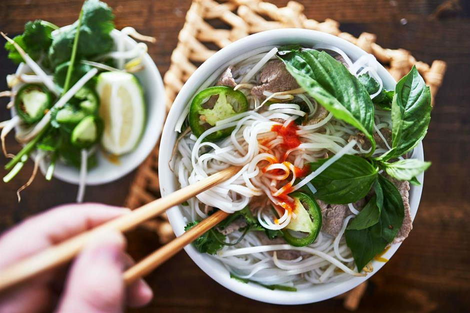

There's nothing quite as comforting as a warming bowl of soup. This short rib pho recipe uses a slow cooker to create intense flavours and beef that melts in your mouth. With a soft kick of chilly and fragrant spice aromas, this slow-cooked pho is a winner.
Ingredients
- 1 kg short ribs
- 50 g shiitake mushrooms, sliced
- 500 ml water
- 0.5 onion
- 1 garlic clove
- 1 star anise
- 1 cinnamon stick
- 1 tsp fennel seeds
- 4 black pepper seeds
- 4 black pepper seeds
- 1 lemongrass stick, bashed
- 2 red chillies
- 0.5 bunch coriander
- 3 mint stalks
- 2 spring onions
- 20 ml fish sauce
- 250 g flat pho noodles, cooked per packet instructions
- 2 limes
Recipe Instruction Step by Step
- Heat a dry frying pan and toast the spices quickly till they become aromatic. Remove and keep on the side.
- Slice on onion in half and char it flat side down in a hot, dry pan until black. Remove, and add the ginger until coloured on both sides.
- Debone the short ribs, browning the bone in a dry pan on every side.
- Add the bone to the crockpot with stock, water, onion, the garlic clove, spices, ginger, coriander stalks and shiitake mushrooms.
- Slice the short rib lengthways in thin slices and add to the pot.
- For best results, set your Crock-Pot or slow cooker to low (for 4 to 6 hours' cooking). You could also use high (for 2 to 3 hours' cooking).
- Cook until the beef gets soft to the bite but does not break up.
- Add fish sauce and salt to taste.
- Remove the bones, spices, ginger, garlic and lemongrass, then portion into bowls with the prepared noodles.
- Slice the spring onion and chilli, add to the pho and top with lightly torn coriander leaves and mint. Serve with lime wedges.
Return to the top
Return to the main page